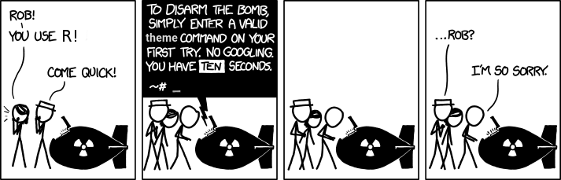

Logística: esta sección sirve para poner en un mismo lugar todos los recursos y materiales que usaremos durante el curso. Al final de esta sección pondré bibliografía y/o materiales adicionales.
Recursos
Etherpad: durante el curso escribiremos código R. Esta etherpad nos permitirá compartir el código.
Foros del curso: un espacio para resolver preguntas sobre el curso y las tareas para casa.
Cuestionario de Google: Generalmente recogeré los trabajos a través de
uploaderso por mail, pero esa función también podría hacerla este cuestionario.Aula Virtual de la asignatura: como Aula Virtual es el sitio oficial de la asignatura colgaré allí los anuncios de tipo “oficial”. También colgaré en Aula Virtual los detalles sobre la evaluación. Además, si hiciera falta, allí podemos organizar reuniones virtuales a través de BBC (Black Board Collaborate).
RStudio Cloud Project: En otros cursos este recurso nos resulto muy útil, pero ahora la versión gratuita tiene límite de tiempo así que creo que no lo usaré, pero por si acaso aquí está.
Materiales de clase
Tutoriales : digamos que son los apuntes/libro oficial del curso. Tenéis que ir leyéndolos poco a poco. Algunas de las tareas a hacer en casa consistirán en leer secciones de estos tutoriales. Los puedes encontrar en la sección
Tutorialesde esta misma web.Transparencias : las transparencias (o slides) que usaré para dar clase. Las puedes encontrar en la sección
Slidesde esta misma web.Guiones de clase/Ejemplos/Ejercicios: cada sesión del curso tendrá un guión asociado con los materailes a usar en esa clase. Los iré colgando conforme avancen las clases.
Bibliografía
La bibliografía que figura en la Guía Docente es:
Básica
Grolemund, G., Wickham, H. (2019): R para Ciencia de Datos. https://es.r4ds.hadley.nz/
Grolemund, G., Wickham, H. (2016): R for Data Science, OReilly. https://r4ds.had.co.nz/
Peng, R. D. (2016): Exploratory Data Analysis with R. Lean Publishing. https://bookdown.org/rdpeng/exdata/
James, G., Witten, E., Hastie T. y Tibshirani, R. (2015): An Introduction to Statistical Learning with applications in R. http://www-bcf.usc.edu/~gareth/ISL/
Complementaria
Ayala, G. (2015): Estadística básica. https://www.uv.es/~ayala/docencia/nmr/nmr13.pdf
Casas, P. (2019): Data Science Live Book. https://livebook.datascienceheroes.com/
Coll, V. y Pérez P. J. (2017): Curso de introducción a R. https://www.uv.es/pjperez/curso_R/index.html
Gil Bellosta, C. G. (2018): R para profesionales de los datos: una introducción. https://www.datanalytics.com/libro_r/
Santana, A. y Hernández, C. M. (2016): R4ULPGC: Introducción a R. http://www.dma.ulpgc.es/profesores/personal/stat/cursoR4ULPGC/index.html
Más bibliografía/Recursos
La comunidad R es muy dinámica y en general comparte sus materiales, lo que hace que los recursos para aprender R sean, exagerando un poco, casi infinitos. Es imposible abarcarlo todo, es una avalancha continúa de nuevas paquetes, análisis, cursos, libros, etc….
Mas abajo tenéis un listado de recursos, pero, de todas formas, mira lo que dice Jesse Mostipak sobre aprender #rstats:
My #rstats learning path:
1. Install R
2. Install RStudio
3. Google “How do I [THING I WANT TO DO] in R?”
Repeat step 3 ad infinitum.— Jesse Mostipak (@kierisi) August 18, 2017
Este cartoon, en cierta manera, complementa el tweet anterior:
Además, como me gusta el tema: el siguiente tweet es la respuesta a @tlyzawx que se quejaba en Twitter de que después de usar Phyton varios años, aún tuviese que buscar ayuda cada vez que usaba la librería Matplotlib. Le contesta @dopplershift uno de los desarrolladores de la librería.
I have been using Python for 15 years and have been a matplotlib core developer for over 10. I google things about the library all the time.
— Ryan May (@dopplershift) June 13, 2020
Recursos para buscar inspiración para tus proyectos
R-weekly: cada semana envían un archivo con los mejores análisis hechos con R esa semana. Tienes que apuntarte aquí.
R-bloggers: Un agregador de blogs relacionados con R.
Kaggle: plataforma para aprender ML. Encontrarás datos y análisis de estos.
Tidy Tuesday: cada semana lanzan una competición de visualización con unos datos.
Más recursos
Modern Drive: un libro, en realidad un bookdown, que me gusta.
swirl: swirl teaches you R programming and data science interactively, at your own pace, and right in the R console!
R views: Un blog de la comunidad R editado por RStudio. Cada mes saca un post con los mejores 40 paquetes de ese mes; por ejemplo, aquí tienes el de julio de 2020.
Stack Overflow: si al final acabas utilizando R para tus análisis, seguramente acabarás utilizando Stack Overflow. Es una comunidad de programadores, en la que muchas veces resolverás las dudas que te puedan surgir en tu aprendizaje sobre R.
Propuestas para aprender R
Necesito un paquete para …
Awesome list
Mucha gente hace sus propias listas de recursos R, aquí tienes algunas: